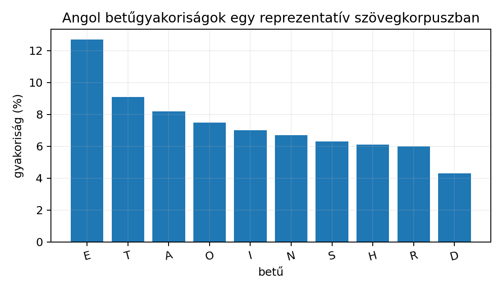

Képzeljük el, hogy egy levelet kell továbbítanunk, és már nem bízunk az eltolásos rejtjelben. A Caesar-rejtjelnek mindössze 25 nem triviális kulcsa van, így a támadó néhány perc alatt kipróbálhatja az összeset. Mi lenne, ha az ábécé betűit nem egységesen toljuk el, hanem minden betűhöz egy tetszőleges másik betűt rendelünk? Ekkor a lehetséges kulcsok száma , ami emberi léptékkel felfoghatatlanul nagy. A 16. században Mária, a skót királynő titkos levelezése is hasonló elven alapult; a levelezés megfejtése mégis halálos bizonyíték lett ellene. Ez az alfejezet azt mutatja meg, miért nem véd a nagy kulcstér, ha a rejtjel megőrzi a nyelv statisztikai szerkezetét.
Továbbvitt eredmény. A monoalfabetikus helyettesítés megőrzi a nyílt szöveg betűgyakorisági eloszlását, bigramjait és szóhosszait; ezt a statisztikai szivárgást használjuk ki később a A Vigenère-rejtjel, a Kasiski-módszer és a koincidenciaindex és az ECB és CBC üzemmód alfejezetekben. Az a gyakorlati szabály, hogy a nagy kulcstér önmagában nem ad biztonságot, visszaköszön a Konfúzió, diffúzió és a helyettesítő–permutáló hálózat alfejezetben.
Tegyük fel, hogy egy angol nyelvű szöveget titkosítunk valamilyen betűpermutációval. Ha a támadó megszámolja a rejtett szöveg betűit, az eloszlás nem egyenletes, hanem nagyon hasonló a nyílt nyelv eloszlásához. A leggyakoribb angol betű az E, utána T, A, O, I, N, S, H, R következik. Az alábbi ábra szemléltető, kerekített értékeket mutat.

A helyettesítéses rejtjel csak átcímkézi a betűket. Ha például az E betűhöz a Z-t rendeltük, akkor a rejtett szövegben Z lesz a leggyakoribb betű. A támadó tehát nem a kulcsot keresi közvetlenül, hanem a statisztikai ujjlenyomatot olvassa le.
Definíció. Legyen egy betűből álló ábécé. Egy monoalfabetikus helyettesítés kulcsa egy permutáció. Ha a nyílt szöveg , ahol , akkor a rejtett szöveg
A visszafejtés a inverz permutáció alkalmazásával történik:
A kulcstér mérete , mert az ábécén értelmezett tetszőleges permutáció. A klasszikus 26 betűs angol ábécé esetén
Ez nagyságrendileg , tehát a nyers erővel történő kulcskeresés gyakorlatilag kivitelezhetetlen. A monoalfabetikus helyettesítés nem azonos az eltolásos rejtjellel: az eltolásos rejtjel egy speciális eset, amikor a permutáció ciklikus eltolás.
A kulcstér első pillantásra meggyőzőnek tűnik. Ha minden másodpercben kulcsot tudnánk kipróbálni, a teljes bejárás akkor is körülbelül másodpercig tartana; ez több millió év. A támadónak azonban eszébe sem kell jutnia a kulcskeresésnek. A rejtjel megőrzi a nyelv statisztikáját, ezért a támadó a rejtett szöveget közvetlenül elemezheti, anélkül hogy ismerné a permutációt. A munkaigény nagyságrendje nem a kulcstér méretétől, hanem elsősorban a rejtett szöveg hosszától és a nyelv redundanciájától függ.
Ezt a gondolatot érdemes rögzíteni: a nagy kulcstér szükséges, de nem elégséges feltétele a biztonságnak. Ha egy rejtjel megőrzi az üzenet statisztikai szerkezetét, a támadó a kulcs kitalálása nélkül is értékes információt nyer.
A gyakoriságelemzés (frequency analysis) a nyelv ismert statisztikáit használja fel arra, hogy rekonstruálja a permutációt. A támadás akkor hatékony, ha a támadónak elegendő rejtett szövege van, és ha a szóközöket nem titkosították.
Algoritmus. Gyakoriságelemzés monoalfabetikus helyettesítés ellen:
A magyar nyelv statisztikája eltér az angoltól: magyar szövegekben az e és az a gyakori, utánuk a t, n, l, s, k következik; az ékezetes betűk (á, é, í, ó, ö, ő, ú, ü, ű) kezelése vagy külön ábécébeli betűként, vagy ékezet nélküli alakra való cserével történik. A pontos gyakorisági értékek a felhasznált szövegkorpusztól függnek.
Legyen a nyílt szöveg:
THE MOST FREQUENT LETTER IN ENGLISH IS THE LETTER E AND THE MOST COMMON WORD IS THE
Ezt a szöveget egy játékpermutációval titkosítjuk, amelyet a Python-illusztrációnál is használunk. A rejtett szöveg, amelyet a támadó lát:
ZIT DGLZ YKTJXTFZ STZZTK OF TFUSOLI OL ZIT STZZTK T QFR ZIT DGLZ EGDDGF VGKR OL ZIT
A támadó nem ismeri a permutációt, de ismeri az angol nyelv statisztikáját. Lássuk a törés lépéseit.
Egybetűs szó. A rejtett T önálló, tehát a nyílt E-nek felel meg; ezt már tudjuk: . Ez megerősíti a ZIT-re adott sejtésünket.
Kétbetűs szó. Az OL két helyen is szerepel az „OL ZIT” szerkezetben. Ez az angol „IS THE” párosra emlékeztet. A sejtés:
Ezzel a TFUSOLI = ENGLISH.
A VGKR szó. A minta , ami a WORD, tehát .
A YKTJXTFZ szó. Már csak néhány betű hiányzik. A rejtett YKTJXTFZ mintája . A FREQUENT megfelelő, tehát:
Az alábbi ábra a részleges kulcs és a részben visszafejtett szöveg együttes fejlődését mutatja az 1., az 5. és a 10. lépés után.
A szövegben előforduló 18 rejtett betű hozzárendelését feltártuk, és a szöveget visszafejtettük; kulcskeresésre nem volt szükség.
A gyakoriságelemzés természetes ellenszere a homofon helyettesítés (homophonic substitution). Ennél a módszernél egy-egy nyílt betűhöz több rejtett szimbólumot rendelünk, arányosan a betű gyakoriságával. Az angol E betűhöz például sok homofont adunk, míg a ritka Q-hoz keveset. A titkosító véletlenszerűen választ az adott betűhöz tartozó homofonok közül.
Ha az E körülbelül 12,7% gyakoriságú, akkor egy 100 rejtett szimbólumot használó rendszerben az E-hez körülbelül 13 homofont rendelünk, a Q-hoz viszont jellemzően csak egyet. Ezáltal a rejtett szöveg betűgyakorisága sokkal egyenletesebbé válik, és a kezdő támadás elveszti legerősebb támaszát.
A homofon helyettesítés mégsem tökéletes: a bigramok (betűpárok), a szóhosszak és az ismétlődő szerkezetek továbbra is szivárognak. Ha a titkosító determinisztikusan mindig ugyanazt a homofont választaná az E-hez, akkor a gyakorisági csúcs visszatérne.
A monoalfabetikus helyettesítés történeti kudarca jól mutatja, hogy a titkosítás csak annyira erős, amennyire az egész használati környezet. Mária, a skót királynő a 16. századi angol–skót konfliktusban fogságban élt, és híveivel titkosított leveleket váltott. A levelezés egy része kódszavakat (nomenklatúra) és betűhelyettesítést kombinált. A kémelhárítást irányító Francis Walsingham emberei a leveleket elfogták, másolták, és a kódot feltörték. A megfejtett szöveg a Babington-összeesküvés bizonyítékaként szolgált, és Mária elítéléséhez vezetett. A pontos évszám és a kódtörés minden részlete forrásellenőrzést igényel.
A tanulság nem az, hogy a helyettesítés „rossz” volt – a saját korában hasznos védelem lehetett –, hanem az, hogy a kulcstér nagysága hamis biztonságérzetet adott. A támadók nem a kulcsot próbálták végig, hanem a nyelv statisztikáját, a kontextust és az ismert kódszavakat használták ki. Ugyanez a minta visszatér a modern kriptográfiában is, például amikor egy blokkrejtjelet helytelenül, statisztikai mintákat megőrző módon használnak.
Az alábbi Python-kód egy rögzített tesztpermutációval titkosít, majd betűgyakoriságot számol. A permutáció csak a tankönyvi példához tartozik; éles célra nem használható.
# OKTATÁSI CÉLRA – NEM ÉLES HASZNÁLATRA
import collections
import string
ABC = string.ascii_uppercase
# Rögzített játékpermutáció a fenti példához
perm = {a: b for a, b in zip(ABC, "QWERTYUIOPASDFGHJKLZXCVBNM")}
def encrypt(nyilt):
return "".join(perm.get(ch, ch) for ch in nyilt.upper())
def betugyakorisag(szoveg):
szurt = [c for c in szoveg.upper() if c in ABC]
return collections.Counter(szurt)
rejtett = encrypt("THE MOST FREQUENT LETTER IN ENGLISH IS THE LETTER E AND THE MOST COMMON WORD IS THE")
print(rejtett)
print(betugyakorisag(rejtett).most_common(5))Várt kimenet:
ZIT DGLZ YKTJXTFZ STZZTK OF TFUSOLI OL ZIT STZZTK T QFR ZIT DGLZ EGDDGF VGKR OL ZIT
[('T', 12), ('Z', 11), ('I', 5), ('G', 5), ('L', 5)]A kimenetben a T és a Z kiemelkedik (a T→E és Z→T javaslat helyes); a
gyakoriságszámlálás tehát azonnal megadja a támadás első fogódzóit. A
collections.Counter tisztán a tanítási példát szolgálja, és
nem biztonsági elemző eszköz.
„A 26! kulcstér elegendően nagy.” Ez a leggyakoribb logikai hiba. A kulcstér mérete nem méri a statisztikai szivárgást. A gyakoriságelemzés a kulcs kitalálása nélkül is működik.
Szóközök és írásjelek megtartása a rejtett szövegben. Ez rengeteg segítséget ad a támadónak: a szavak hossza, az egy- és kétbetűs szavak, az ismétlődő szavak mind azonosíthatók. A helyes eljárás az lenne, hogy a titkosítás előtt a szóhatárokat is megszüntessük, például a szöveget folyamatos betűsorrá alakítjuk, vagy legalább a szóközöket is titkosítjuk.
Ugyanazon kulcs használata egymás után több üzenethez. A monoalfabetikus rejtjel annál könnyebben törhető, minél több anyagot gyűjt a támadó. Ha a támadó több szöveget lát ugyanazzal a permutációval, a statisztikai becslés pontosabb lesz. A helyes gyakorlat az, hogy ilyen primitívet ne használjon senki valós titokvédelemre; a modern rendszerek friss, egyedi kulcsot és hitelesített titkosítást alkalmaznak.
1. feladat (A) Fogalmazd meg a monoalfabetikus helyettesítés definícióját. Mekkora a kulcstér mérete 26 betű esetén, és miért nem elegendő ez a védelem?
2. feladat (A) A fenti játékpermutációval titkosítsd a HELLO szót. A permutáció: A→Q, B→W, C→E, D→R, E→T, F→Y, G→U, H→I, I→O, J→P, K→A, L→S, M→D, N→F, O→G, P→H, Q→J, R→K, S→L, T→Z, U→X, V→C, W→V, X→B, Y→N, Z→M.
3. feladat (B) A ZIT SQMN RGU rejtett szöveget a fenti játékpermutációval hozták létre. Fejtsd meg; ellenőrizd, hogy a visszafejtett szöveg egy ismert angol frázis.
4. feladat (B) Képzeld el, hogy egy rejtett szövegben a QFR hárombetűs szó ötször, a ZIT hárombetűs szó hétszer fordul elő, és az OL kétbetűs szó a ZIT előtt áll kétszer. Melyik angol szavakat azonosítanád, és milyen betű-hozzárendeléseket tennél meg első lépésben?
5. feladat (C) Bizonyítsd be, hogy a monoalfabetikus helyettesítés megőrzi az egyes betűk gyakoriságát: ha a nyílt szövegben az x betű alkalommal fordul elő, akkor a rejtett szövegben a betű is pontosan alkalommal jelenik meg. Ez miért teszi lehetővé a gyakoriságelemzést?
6. feladat (D) Írj Python függvényt, amely beolvas egy rejtett szöveget, betűgyakoriságot számol, és kiírja a három leggyakoribb rejtett betűt. A függvény nem törheti meg maga a rejtjelet, de a kimenete alapján javasolj jelölteket az E, T és A betűkre.
Önellenőrzés – válaszok
1. feladat megoldása. A monoalfabetikus helyettesítés egy permutációt rendel a betűkhöz; a titkosítás betűnként -t alkalmaz, a visszafejtés -et. 26 betű esetén a kulcstér mérete . A kulcstér nagy, de a rejtjel a nyelv statisztikáját változatlanul hagyja, ezért gyakoriságelemzéssel feltörhető; a munkaigény a szöveg hosszától függ, nem a kulcsok számától.
2. feladat megoldása. HELLO titkosítása: H→I, E→T, L→S, L→S, O→G, tehát a rejtett szó ITSSG.
3. feladat megoldása. A táblázatból: Z→T, I→H, T→E, S→L, Q→A, M→Z, N→Y, R→D, G→O, U→G. Ellenőrizzük: SQMN = LAZY, RGU = DOG. A teljes szöveg: THE LAZY DOG.
4. feladat megoldása. A QFR gyakori hárombetűs szó; a leggyakoribb angol hárombetűs szó a THE, de a ZIT is nagyon gyakori. Ha a ZIT hétszer, a QFR ötször fordul elő, akkor a ZIT lehet a THE, a QFR pedig az AND. Az OL a ZIT előtt áll, tehát az OL lehet IS (IS THE). Első lépésben Z→T, I→H, T→E, Q→A, F→N, R→D, O→I, L→S.
5. feladat megoldása. Ha a nyílt szövegben az x betű -szer szerepel, akkor a permutáció minden x előfordulást -re képez. Mivel injektív, a betű a rejtett szövegben pontosan azokon a pozíciókon áll, ahol korábban x állt; tehát gyakorisága is . Ez azt jelenti, hogy a rejtett szöveg betűgyakoriság-eloszlása megegyezik a nyílt szöveg eloszlásának permutáltjával, így a gyakorisági rangsor a nyelv statisztikájával összevethető.
6. feladat megoldása. A függvény a
collections.Counter segítségével számlál; a kimenet alapján
a három leggyakoribb rejtett betűt vizsgáljuk. Rövid szövegnél a sejtést
más támpontokkal is ellenőrizni kell.
# OKTATÁSI CÉLRA – NEM ÉLES HASZNÁLATRA
import collections
import string
def statisztika(rejtett):
szurt = [c for c in rejtett.upper() if c in string.ascii_uppercase]
gyak = collections.Counter(szurt)
leggyakoribb = gyak.most_common(3)
print("Három leggyakoribb rejtett betű:", leggyakoribb)
print("Javasolt jelöltek:",
leggyakoribb[0][0], "-> E,",
leggyakoribb[1][0], "-> T,",
leggyakoribb[2][0], "-> A")
rejtett = "ZIT DGLZ YKTJXTFZ STZZTK OF TFUSOLI OL ZIT STZZTK T QFR ZIT DGLZ EGDDGF VGKR OL ZIT"
statisztika(rejtett)A kimenet a fenti rejtett szövegre a
statisztika(rejtett) hívással (futtatva):
Három leggyakoribb rejtett betű: [('T', 12), ('Z', 11), ('I', 5)]
Javasolt jelöltek: T -> E, Z -> T, I -> AItt a T→E és Z→T javaslat helyes, az I→A viszont nem (I valójában H): rövid szövegnél a harmadik helytől a rangsor megbízhatatlan. A javaslat a rangsor alapján pontatlan is lehet, mert a rövid szöveg nem követi tökéletesen a nyelvstatisztikát; ezért kell a dupla betűket, bigramokat és szavakat is figyelembe venni.
A monoalfabetikus helyettesítés minden betűhöz egy permutáció szerint rendel egy másik betűt. A kulcstér méretű, tehát a nyers kulcskeresés kivitelezhetetlen. A rejtjel mégis gyenge, mert megőrzi a nyílt szöveg statisztikai szerkezetét: a betűgyakoriság, a bigramok, a szóhosszak és az ismétlődő szavak változatlanul felismerhetők. A gyakoriságelemzés ezeket a támpontokat iteratívan használja; a leggyakoribb betű, a rövid szavak, a dupla betűk és a THE/AND/ING mintázatok gyakran elegendők a permutáció rekonstruálásához. A homofon helyettesítés a gyakorisági csúcsokat csökkenti, de a bigram-statisztikát nem szünteti meg. A nagy kulcstér önmagában nem ad biztonságot; ez az elv a modern tervezésben a Konfúzió, diffúzió és a helyettesítő–permutáló hálózat alfejezetben is visszatér. A statisztikai szivárgást a A Vigenère-rejtjel, a Kasiski-módszer és a koincidenciaindex alfejezetben tovább vizsgáljuk, valamint hasonló logika jelenik meg az ECB és CBC üzemmód elemzésében.